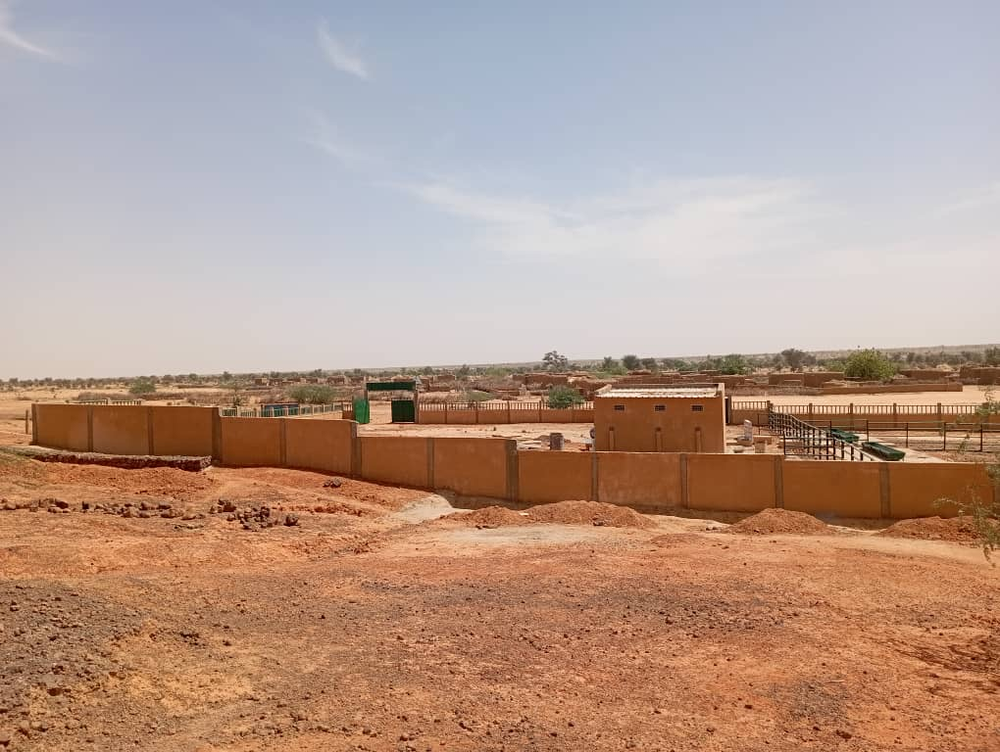

Vision
Être un partenaire technique de référence au Niger et en Afrique pour les projets de BTP, d'hydraulique et d'infrastructures, reconnu pour sa rigueur et son engagement.
Une entreprise nigérienne structurée, née à Niamey en 2017, au service des infrastructures, de l'eau, de l'énergie et de la construction.
Notre histoire
GLOBAL SOLUTIONS SARL a été créée en 2017 à Niamey, Niger (RCCM : RCCM-NI-NIA-2017-B-003 · NIF : 40242/R). Dès ses débuts, l'entreprise s'est donnée une vocation multidisciplinaire : accompagner les projets de construction, d'hydraulique et d'infrastructures avec une équipe technique resserrée et engagée.
Aujourd'hui, une dizaine de collaborateurs — ingénieurs et techniciens expérimentés — portent les études, l'exécution et le suivi des chantiers, sous la direction générale et technique de l'entreprise.
Notre engagement est clair : contribuer au développement du Niger et de l'Afrique par des ouvrages utiles, durables et bien exécutés.

Notre identité
Être un partenaire technique de référence au Niger et en Afrique pour les projets de BTP, d'hydraulique et d'infrastructures, reconnu pour sa rigueur et son engagement.
Concevoir, étudier et exécuter des ouvrages de bâtiment, de génie civil, d'hydraulique et d'énergie avec expertise technique, professionnalisme et sens du résultat.
Direction générale, direction technique, pôle administratif et financier et pôle logistique : une structure resserrée pour décider vite et exécuter bien.
Nos valeurs
Des ingénieurs et techniciens qui maîtrisent les études, les calculs et l'exécution des ouvrages.
Des engagements tenus, un suivi rigoureux et une transparence dans la relation client.
Des solutions adaptées aux réalités du terrain, dont l'énergie solaire au service de l'hydraulique.
Une organisation structurée, des méthodes claires et un souci constant de la qualité.
Contribuer au développement du Niger et de l'Afrique par des infrastructures utiles et durables.
BTP, eau, énergie, métallique et logistique : une capacité d'intervention dans plusieurs domaines complémentaires.
Parlons de vos besoins en BTP, hydraulique ou énergie. Notre équipe vous répond rapidement.